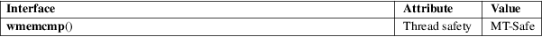

wmemcmp − compare two arrays of wide-characters
Standard C library (libc, −lc)
#include <wchar.h>
int wmemcmp(const wchar_t s1[.n], const wchar_t s2[.n], size_t n);
The wmemcmp() function is the wide-character equivalent of the memcmp(3) function. It compares the n wide-characters starting at s1 and the n wide-characters starting at s2.
The wmemcmp() function returns zero if the wide-character arrays of size n at s1 and s2 are equal. It returns an integer greater than zero if at the first differing position i (i < n), the corresponding wide-character s1[i] is greater than s2[i]. It returns an integer less than zero if at the first differing position i (i < n), the corresponding wide-character s1[i] is less than s2[i].
For an explanation of the terms used in this section, see attributes(7).

C11, POSIX.1-2008.
POSIX.1-2001, C99.
memcmp(3), wcscmp(3)